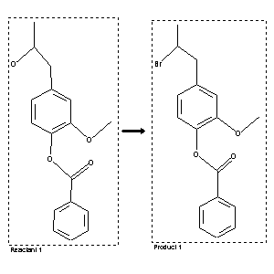

|  |
| FA | RX(1); FLST(1); RX(1) |
Reaction (1 of 1)
| Reaction ID | 4314101 |
| Reactant BRN | 3103756 |
| Reactant | 1-(4-Benzoyloxy-3-methoxy-phenyl)-2-propanol |
| Product BRN | 3103929 |
| Product | 1-benzoyloxy-4-(2-bromo-propyl)-2-methoxy-benzene |
| No. of Reaction Details | 1 |
Reaction Details (1 of 1)
| Reaction Classification | Preparation |
| Reagent | HBr, Py |
| Solvent | benzene; petroleum ether |
| Citation Pointer | 97431; Journal; Sundholm,F.; ACSAA4; Acta Chem.Scand.; EN; 22; 1968; 854-858; |
Reference (1 of 1)
| Citation Number | 97431 |
| Document Type | Journal |
| Authors | Sundholm,F. |
| CODEN | ACSAA4 |
| Journal Title | Acta Chem.Scand. |
| Language Code | EN |
| (Series) Volume | 22 |
| Publication Year | 1968 |
| Page | 854-858 |